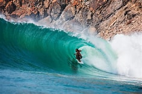
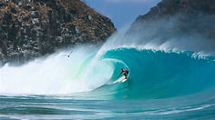
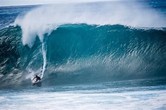

Uma paisagem paradisíaca da Praia do Sudeste, em Fernando de Noronha, destacando o mar cristalino em tons de verde-turquesa e azul, com ondas suaves que quebram na areia dourada. Ao fundo, erguem-se imponentes morros de vegetação nativa sob um céu azul ensolarado com nuvens brancas, transmitindo uma sensação de paz e natureza preservada.

Praia da costa Norte de Fernando de Noronha, com vista deslembrante com o mar calmo.


